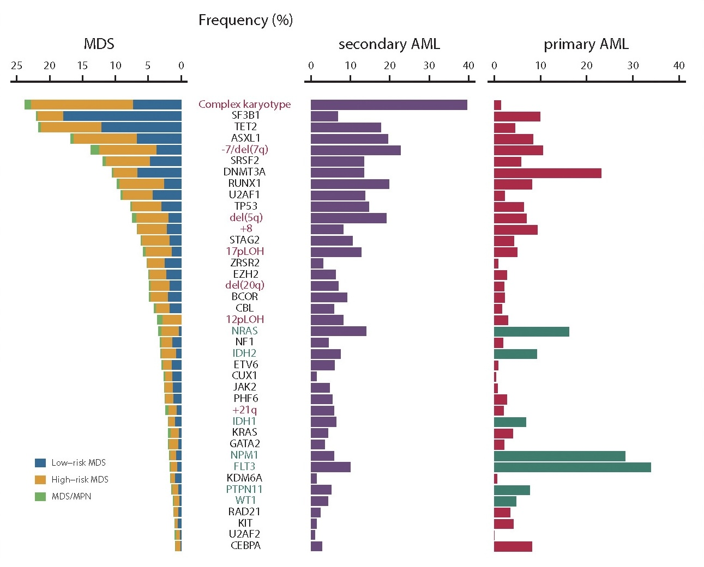
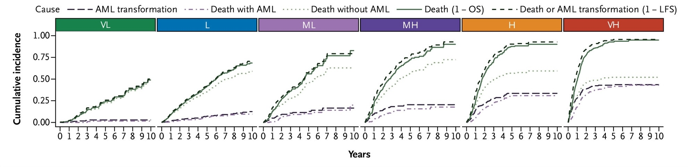
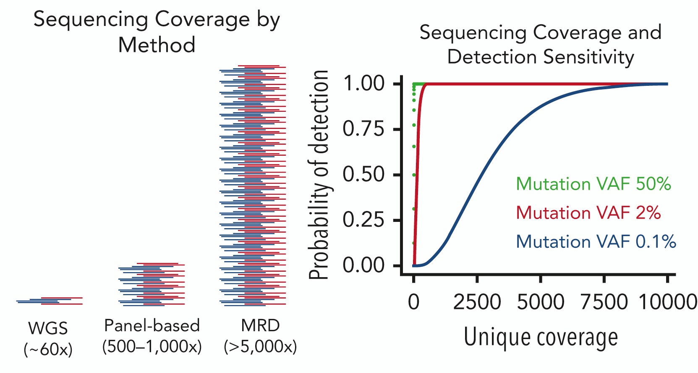

Introduction for Trainees
Updated 2026-01-01
MyeloSeq
Targeted sequencing panel for patients with myeloid neoplasms (MDS, MPN, MDS/MPN, AML)
Indications: new diagnosis or measurable residual disease (MRD) assessment
Reportable range: single nucleotide variants (SNVs) and small insertions and deletions (indels) in 55 genes
Target genes clinically relevant for diagnosis, risk stratification, and targeted therapies
Limit of detection: ≥2% VAF (new diagnosis) or ≥0.1% VAF (MRD)
Recurrent Alterations in MDS and AML
Ogawa S. 2019. PMID: 30670442.
MDS Ouctome by IPSS-M Risk Group
Cumulative incidence of AML or death

Bernard E. 2022. PMID: 38319256.
ELN AML Risk Groups (2022)
| Favorable |
- t(8;21)(q22;q22.1)/
RUNX1::RUNX1T1
- inv(16)(p13.1q22) or t(16;16)(p13.1;q22)/
CBFB::MYH11
- Mutated
NPM1 without FLT3-ITD
|
| Intermediate |
- Mutated
NPM1 with FLT3-ITD
- Wild-type
NPM1 with FLT3-ITD (without adverse-risk lesions)
- t(9;11)(p21.3;q23.3)/
MLLT3::KMT2A
- Cytogenetic/molecular abnormalities not classified as favorable or adverse
|
| Poor/adverse |
- t(6;9)(p23.3;q34.1)/
DEK::NUP214
- t(v;11q23.3)/
KMT2A-rearranged
- t(9;22)(q34.1;q11.2)/
BCR::ABL1
- t(8;16)(p11.2;p13.3)/
KAT6A::CREBBP
- inv(3)(q21.3q26.2) or t(3;3)(q21.3;q26.2)/
GATA2, MECOM(EVI1)
- t(3q26.2;v)/
MECOM(EVI1)
- -5 or del(5q); -7; -17/abn(17p)
- Complex karyotype, monosomal karyotype
- Mutated
ASXL1, BCOR, EZH2, RUNX1, SF3B1, SRSF2, STAG2, U2AF1, and/or ZRSR2
- Mutated
TP53
|
Döhner H. 2022. PMID: 35797463.
Measurable Residual Disease (MRD)
- Molecular
MRD improves risk stratification after induction therapy and can be used for monitoring

Blachly JS. 2022. PMID: 36453518.
Measurable Residual Disease (MRD)
- Molecular
MRD improves risk stratification after induction therapy and can be used for monitoring

Jongen-Lavrencic M. 2018. PMID: 29601269.
MyeloSeq Target Genes (n = 55)
- ASXL1
- BCOR
- BCORL1
- BRAF
- CALR
- CBL
- CD33
- CEBPA
- CHEK2
- CSF3R
- CUX1
- DDX41
- DNMT3A
- ETNK1
- ETV6
- EZH2
- FLT3
- GATA1
- GATA2
- GNB1
- IDH1
- IDH2
- JAK2
- KIT
- KMT2A
- KRAS
- MPL
- MYC
- NF1
- NOTCH1
- NPM1
- NRAS
- PHF6
- PIGA
- PPM1D
- PRPF8
- PTPN11
- RAD21
- RUNX1
- SETBP1
- SF3B1
- SMC1A
- SMC3
- SRSF2
- STAG2
- STAT3
- STAT5B
- SUZ12
- TET2
- TP53
- U2AF1
- UBA1
- UBTF
- WT1
- ZRSR2
Coverage Determines Sensitivity
Duncavage EJ. 2022. PMID: 36130297.
Error Correction Improves Specificity

Duncavage EJ. 2022. PMID: 36130297.
Summary
MyeloSeq is a targeted sequencing panel for patients with myeloid neoplasms
55 genes and/or hotspots are sequenced at high depth (>5,000x) to identify clinically relevant somatic variants with high sensitivity
Initial study: diagnosis, risk stratification, and identification of variants associated with FDA-approved or NCCN compendium-listed therapies
Follow-up study: measurable residual disease (MRD) assessment